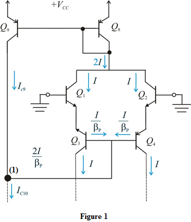

Refer to equation 7.68 in the text book.
Write the relationship between and .
.
Substitute .
Apply Kirchhoff’s current law at node (1) as shown in Figure 1.
Since, ,
Determine the current .
.

Thus, the value of  is.
is.
Refer to Figure 12.15 in the text book.

Refer to equation 7.68 in the text book.
Write the relationship between and.
Substitute .
Apply Kirchhoff’s current law at node (1) as shown in Figure 1.
Since, ,
Determine the current.
Thus, the value of is.
The value of  is,
is,
.
Determine the current.
Determine the current .
.
Thus, the reference current of the Wildar current source is.
Refer to equation 12.75 in the text book.
Determine the series emitter resistance of the Wildar source.
Thus, the series emitter resistance of the Wildar source is.
of the Wildar source is.